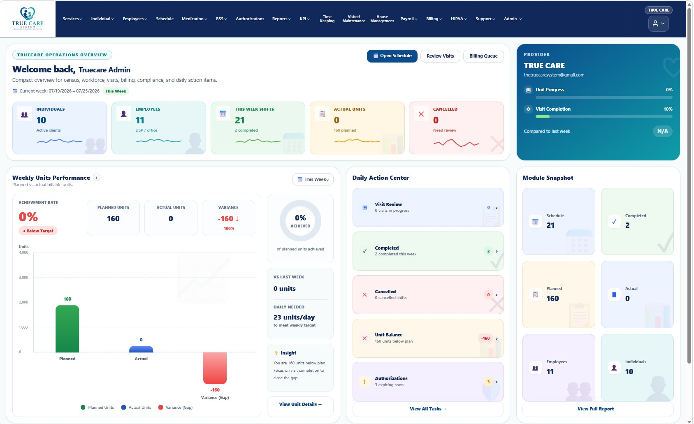

The Dashboard is the main workspace of True Care System. After a successful login, users are automatically redirected to the Dashboard, where they can quickly access modules, daily activities, notifications, and organization-specific information based on their assigned role.
After authentication, the Dashboard is displayed automatically. The available menus, widgets, and information depend on the user's assigned role.

Figure 1. True Care System Dashboard
| Area | Description |
|---|---|
| Top Navigation | Displays the application title, user information, notifications, and account menu. |
| Left Navigation Menu | Provides access to all modules available for the user's role. |
| Dashboard Content | Displays widgets, statistics, reminders, and operational information. |
| User Profile | Displays the logged-in user's information and account options. |
The Dashboard automatically adjusts according to the user's assigned role. Different users may see different modules and information.
Why do I see different menus than other users?
Dashboard menus are displayed according to your assigned role and permissions.
Can I customize my Dashboard?
Available dashboard options depend on your organization's configuration.
Why can't I access some modules?
Your assigned role may not have permission to access those modules.